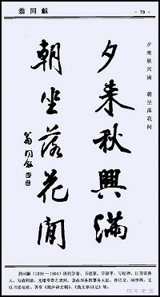
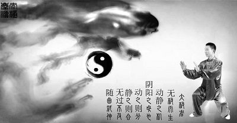

中国象棋

中国象棋是一种古老的智力游戏，人们往往通过对弈来参透一些人生的一些哲理，来提高自己的觉悟能力、思维能力和生活乐趣。 一、中国象棋的起源 中国象棋是起源于中国的一种棋戏，产生的年代不详。象棋在中国有着悠久的历史。在春秋战国时代文化名著的《楚辞. 招魂》中就有：“蔽象棋，有六博兮。”的词句。说明在当时已经有了“象棋”这个名词，当然那时的象棋不是现在的象棋，王逸注《楚辞》云“博，著也，行六棋，故曰六博。”。司马迁在《史记》中也提到了六博。据《史记.第六十九卷.苏秦列传》中记载：当时齐地的居民安居乐业“斗鸡走狗，六博蹋鞠”。可见象棋在当时已经开始在民间广泛流行。那时的棋，大概是一方为六子，叫“六博”。另据《说苑》记载：雍门子周以琴见孟尝君，曾说“足下......燕则斗象棋而舞郑女。”。可见当时，在达官权贵和士大夫中，已经很流行下棋了。 棋盘里的河界，又名“楚河汉界”。
中国书法

书法， 在汉字书写中，书法与中国的历史同兴衰。它是中国最高的艺术形式，它传达思想的同时，也表现了线条的美。书法是中国四大技艺——琴、棋、书、画之一。然而，比起其他三种，书法更多地体现了韵律、线条和结构的完美。书法是汉字的书写艺术。它不仅是中华民族的文化瑰宝，而且在世界文化艺术宝库中独放异采。汉字在漫长的演变发展的历史长河中，一方面起着思想交流、文化继承等重要的社会作用， 另一方面它本身又形成了一种独特的造型艺术。近代经过考证，关于中国文字起源，一般认为在距今约5000-6000年左右中国黄河中游的“仰韶文化时期”，已经创造了文字。仰韶文化因1921年首先在河南渑池仰韶村发现而得名的。近40余年，又陆续有许多发现。 世界上各民族的文字，概括起来有三大类型，即表形文字；表意文字；表音文字。汉字则是典型的在表形文字基础上发展起来的表意文字。象形的造字方法即是把实物画出来。不过画图更趋于简单化、抽象化，成为突出实物特点的一种符号，代表一定的意义，有一定的读音。我们的汉字，从图画、符号到创造、定型，由古文大篆到小篆，由篆而隶、楷、行、草，各种形体逐渐形成。在书写应用汉字的过程中，逐渐产生了世界各民族文字中独一的、可以独立门类的书法艺术。
太极拳
太极起源于中国古代，现代它被人们作为一种强身健体的运动。
---它几乎适合每个人。
---它能够强身健体。
---它有温和，圆润的招式。
---它能够使身心结合。
---它有很多不同的招式。
---它能够使人通过运动感到愉悦。
---它从几世纪前就被人们认识到可以治疗关节炎。
太极拳注重正确的招式和呼吸的调整，太极拳的招式是流动的，优雅的，有很好的平衡性。能够完全调和身心结合。在当今高压的生活下，太极拳可以提供精神的放松和肉体的舒适。
太极和我们通常认为的加强肌肉力量的想法完全不同，它强调由内向外，以柔克刚，以圆周运动比直线运动要好，以退为进。它和西方的运动尤其不一样，比如橄榄球要求运动员动作越有力越快就越好。太极是一种由内同时增强人的意志和肉体的运动。
联系我们
TEL：18228075165
QQ：2044369821
微信关注我们：